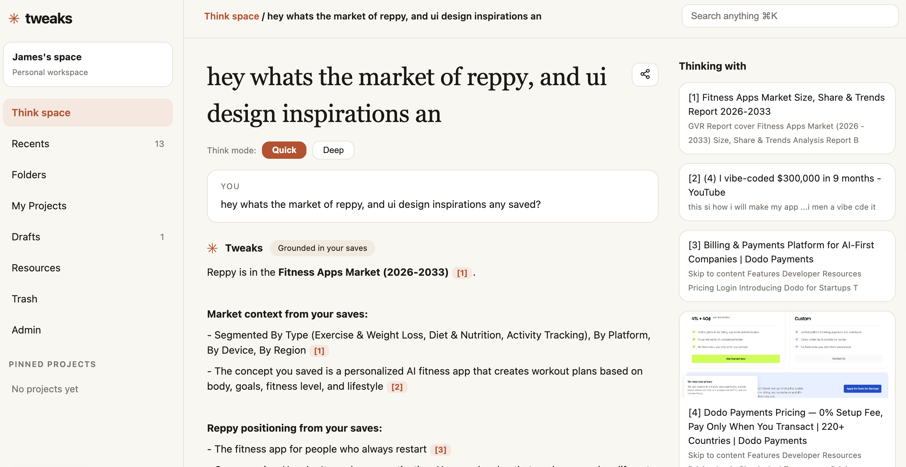
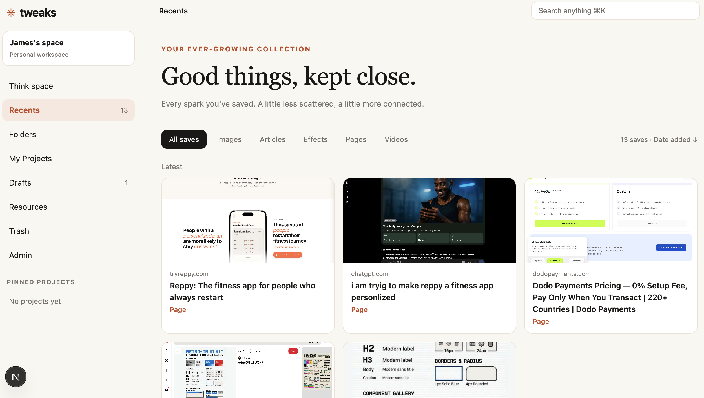

Tweaks is a think space for your saves. Capture any page, image, article, video, or AI chat with one line about why — Tweaks files it automatically, remembers what matters, and lets you brainstorm with an AI that answers from your own collection, with citations.
The two rooms you'll live in.


You need Node.js 22+ and Chrome. A Meta API key is optional — without one, the app runs on fixtures so you can try everything.
Clone the repo and enter the directory:
git clone https://github.com/nitineeen/project-tweaks.git
cd project-tweaksIt asks for a port (3121), the AI base URL, your API key (blank = mock mode), then installs, checks the key, and creates your database:
node setup.mjsIt prints an extension token at the end — keep it for step 4.
cd apps/web && npm run devOpen http://localhost:3121/think — that's your think space.
Open chrome://extensions → Developer mode → Load unpacked → pick the apps/extension folder. Pin Tweaks to the toolbar.
Extension popup → Connection → API URL http://localhost:3121 + the token from step 2. Queued saves upload right away.
Press Alt+T (⌥T on Mac) on any page, Enter for the full page, tell it why you're saving it — then ask about it in Think space.
The short tour. The README has every endpoint and setting.
Mock mode costs nothing. With a key, Meta bills per use (verify on their pricing page):
| MODEL | PRICE |
|---|---|
| Muse Spark 1.3 / 1.2 | $1.25 / $4.25 per 1M in/out tokens |
| Spark Contributor mode | $0.10 / $0.20 per 1M in/out tokens |
| Muse Image 1.0 | $0.01 per image |
| Voice Transcribe | $0.18 per audio hour |
The backend isn't running — the save is queued locally and uploads when you start npm run dev.
Reload the extension at chrome://extensions (⟳) and refresh the tab. chrome:// pages can't show popups — use the box in the extension popup there.
Re-run node setup.mjs and pick another port.
Check AI_API_KEY in apps/web/.env.local and restart the dev server.